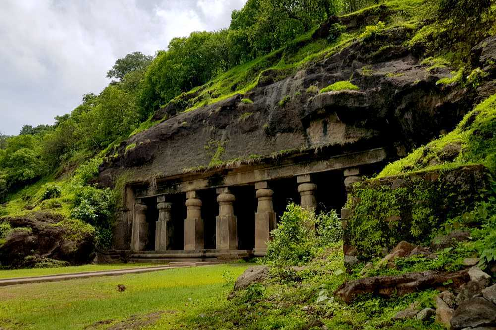

Juhu Beach
Juhu beach is the longest beach in Mumbai and the most popular among tourists as well. It is
renowned for its wide variety of street food that has a typical Mumbai flavour and is sweet and
sour. The surrounding area of Juhu is one of the poshest localities in Mumbai and is home to a lot
of famous Bollywood and TV celebrities - the most famous being Amitabh Bachchan's bungalow - and it
is not rare to spot a celebrity jogging on the beach.

Marine Drive
Marine Drive is the most easily identifiable landmark associated with Mumbai and is indicative of
the glamor and glitter of the city. It is essentially 3.6 km long, arc-shaped boulevard along the
South Mumbai coast that starts at the southern end of Nariman Point and ends at Girgaum Chowpatty,
popularly known as Chowpatty Beach. The coast wraps the Arabian sea and is the best place in Mumbai
to watch the sunset or even to just take a leisurely stroll by the sea any time of the day or night.
At night, when the whole coastline lights up, it justifies its other moniker i.e. Queen's Necklace.

Elephant Caves
A UNESCO World Heritage Site, Elephanta Caves is a specimen of rock-cut art and architecture from
the times of medieval India. The caves are located on the Elephanta or Gharapuri island which is
situated at a distance of 11 km from the city of Mumbai. Natively known as Gharapurichi Leni, the
Elephanta Caves that exist today are ruins of what were once elaborately painted artworks. It also
provides an amazing view of the Mumbai skyline. You can reach the Elephanta Caves via a ferry ride
from Gateway of India. This collection of cave temples dates back to 5th to 7th centuries and most
of them are dedicated to Lord Shiva.

Coloba Causeway
One of the most exciting and eclectic places to visit in Mumbai is the Colaba Causeway, famous for
being a shopper's paradise. Iconic at best, ask any Mumbaikar and they will tell you that the
Causeway is pretty much the heart of Mumbai. Resurgent, even after the terror attack, this shopping
street stood up on its feet in no time. Apart from gorgeous clothes and accessories, especially
earrings, you can also find great bargains on home decor stuff such as lampshades, curios and
antiques. If designer stuff is your calling, there are a number of options for that as well. If you
do feel like catching a bite and a beer, there are a number of restaurants that offer great food and
booze at very affordable prices and Cafe Leopold and Cafe Mondegar are pretty much the best!

Gateway Of India
The Gateway of India is, without doubt, one of the most popular tourist
hotspots of Mumbai. Sitting proudly on the Apollo Bunder, it overlooks the Arabian Sea. It is one of
the defining monuments of the city of Mumbai and was built in the year 1924. The construction was
undertaken by the famous architect George Wittet, to commemorate the visit of King George V and
Queen Mary to Mumbai. The imposing structure of the monument is a beautiful confluence of Indian,
Arabic and Western architecture and has become a popular tourist hub in the city. It is also the
starting point of a number of ferry services that ply to the historic Elephanta Caves.

Film City Mumbai
Spread across a vast area of 520 acres, the Film City is comprised of
about twenty indoor studios and is located in Aarey Colony, Mumbai, Film City is often regarded as a
home of Bollywood. The place is so vast that about 1000 film sets can be erected here
simultaneously. Over the years, it has been the locations for a number of Bollywood films. Almost
over 900 movies and many more television shows have also been shot here. Today, Film City has grown
to be one of the best film studios, well-equipped with all the essential amenities and world-class
facilities. Not only is it a great place for film shoots, but it is also filled with verdant
greenery and refreshing expanses.

Prince of Wales Museum
The Prince of Wales Museum is a splendid structure situated in Mumbai and
is regarded to be one of the heritage buildings of the city. The foundation stone of this edifice
was laid down by the Prince of Wales on the 11 November 1905, and it was established as a museum on
10 January 1922. The facade of the museum is a sight to behold in itself and sits in the midst of an
expansive green garden. Adorned with stunning stone and lattice work, the architecture of the Prince
of Wales Museum is a blend of Indian, Mughal and British engineering styles. Inside, the museum
holds almost 50,000 of some of the most exquisite artefacts relating to the rich and diverse history
of India.
Essel World
One of the most famous and popular amusement parks in the country, Essel
World is located in Gorai, close to the capital of Maharashtra, Mumbai. EsselWorld and Water Kingdom
together make one of Asia's largest amusement parks. They expand over an area of 64 acres and are
frequented by locals and non-locals from all age groups, especially kids. With some exciting rides
and entertainment, Essel World and Water Kingdom are a favourite summer destination for many
families. One can plan a day-long picnic or stay overnight at one of the hotels nearby to explore
both the amusement parks. For tourists visiting the state capital, a visit to Essel World is a must.
For many of the adults going to Essel World is synonymous with childlike enthusiasm and nostalgia.

Siddhivinayak Temple
The Siddhivinayak Temple in the Prabhadevi area is a revered shrine
dedicated to Lord Ganesha and is one of the most significant and frequented temples in Mumbai. This
temple was built in the year 1801 by Laxman Vithu and Deubai Patil. The couple did not have any
children of their own and decided to build the Siddhivinayak temple so as to fulfil the wishes of
other infertile women. Interestingly, the statue of Lord Ganesha here is believed to be
self-manifested and grants wishes.